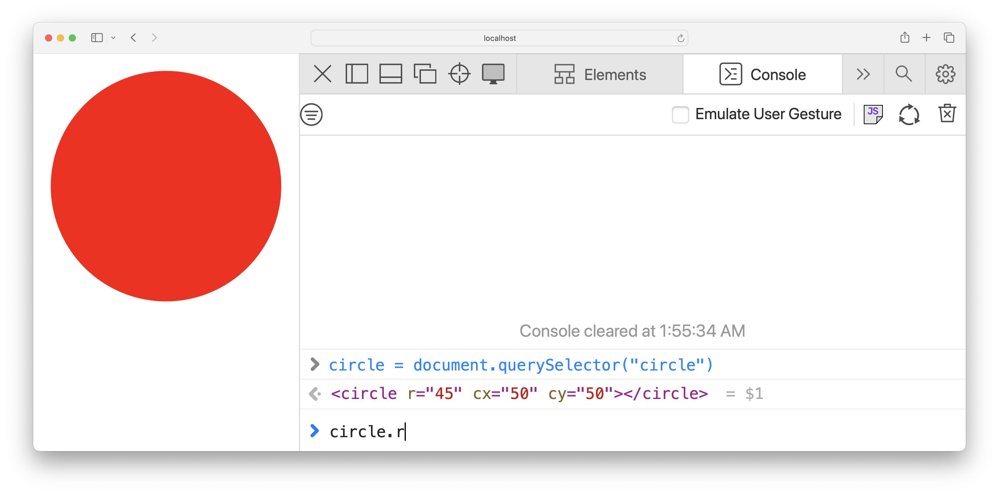
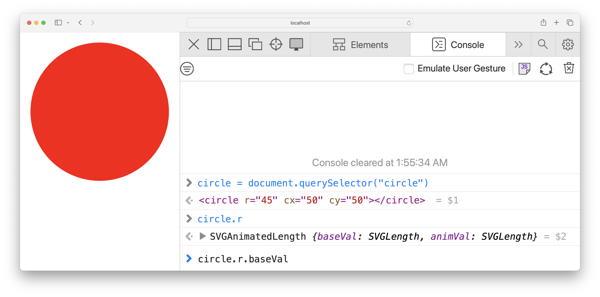
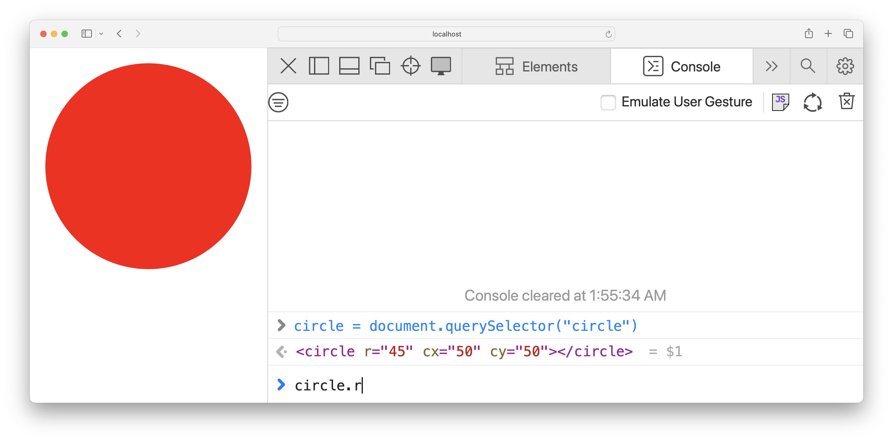
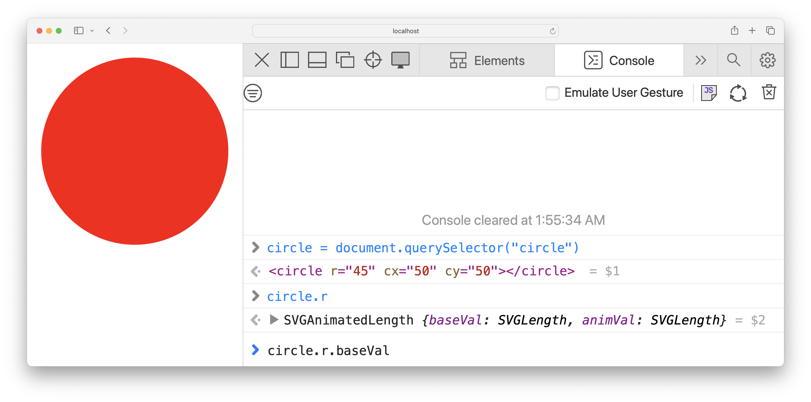
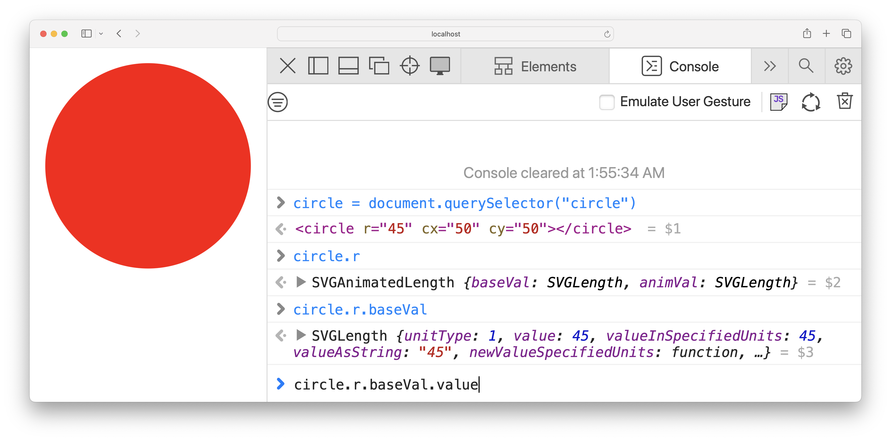
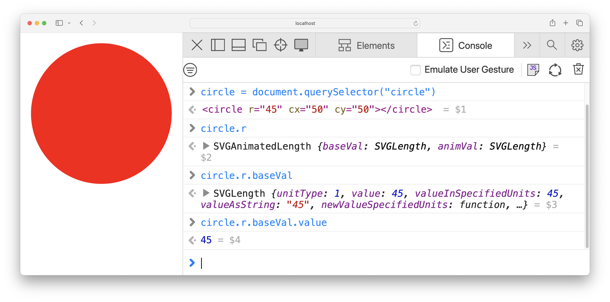
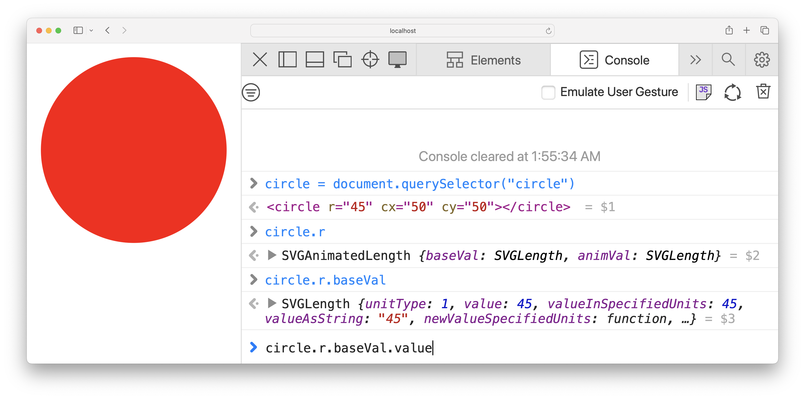
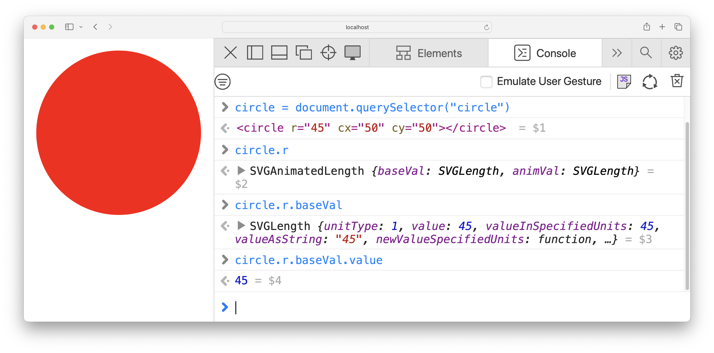

let controls = Object.assign(document.createElement('div'), {
className: 'video-player'
});
video.replaceWith(controls);
controls.append(video);
controls.insertAdjacentHTML('beforeend', `<div class="video-controls">
<div class="toolbar">
<button class="play-pause" title="Play"><i class="fa-play"></i></button>
<button class="jump-back"><i class="fa-arrow-rotate-left"></i></button>
<button class="jump-forward"><i class="fa-arrow-rotate-right"></i></button>
<input type="range" class="volume" max="1" step="0.01" value="1">
<button id="fullscreen"><i class="fa-expand"></i></button>
</div>
<input type="range" class="progress" step="0.1" value="0">
</div>`);
controls.querySelector(".play-pause").addEventListener('click', async function () {
if (video.paused) {
await video.play();
this.title = 'Pause';
this.firstElementChild.className = "fa-pause";
}
else {
video.pause();
this.title = 'Play';
this.firstElementChild.className = "fa-play";
}
});
controls.querySelector('.jump-back').addEventListener('click', function() {
video.currentTime -= 10;
});
controls.querySelector('.jump-forward').addEventListener('click', function() {
video.currentTime += 10;
});
controls.querySelector('.progress').addEventListener('input', function() {
video.currentTime = this.value / 100 * video.duration;
});
controls.querySelector('.volume').addEventListener('input', function() {
video.volume = this.value;
});
video.addEventListener('timeupdate', function() {
controls.querySelector('.progress').value = this.currentTime / this.duration * 100;
});
.video-player {
position: relative;
.video-controls {
position: absolute;
bottom: 0;
left: 0;
right: 0;
padding: .4em .5em;
display: flex;
flex-flow: column;
background-color: rgb(0 0 0 / 20%);
backdrop-color: blur(5px);
.toolbar {
display: flex;
justify-content: space-between;
.volume {
width: 30%;
}
button {
cursor: pointer;
background-color: #444;
border: none;
color: white;
padding: 5px 10px;
}
}
.progress {
width: 100%;
}
}
}
 



 


